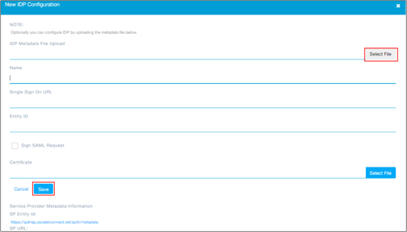
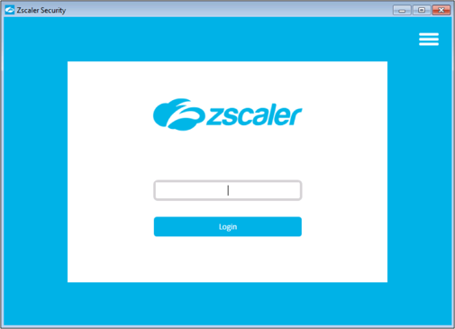

Go to https://admin.zscalerconnect.net/ and login as an Administrator
Navigate to Administration > IDP Configuration.
Click Add New IDP Configuration.
Copy and save the following IDP Metadata:
Click Select File and select the metadata file you just saved:

Click Save.
Done!
Notes:
SP-initiated flows are supported.
IDP-initiated flows and Just In Time (JIT) provisioning are not supported.
Run the Zscaler client.
Enter your email address.
Click Login:
